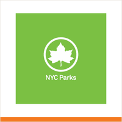
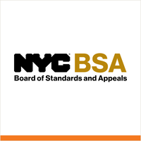

The district
 City Council
City Council State Assembly
State Assembly State Senate
State Senate Congress
Congress Subway
Subway Citi Bike
Citi Bike NYC Ferry
NYC FerryTurn layers on and off. Tap an official's logo or a board's seal for its page. Zoning and land use lot by lot are on the land use map.
About
Brooklyn Community District 10 encompasses Bay Ridge, Dyker Heights, and Fort Hamilton. Covering 4.6 square miles and home to more than 120,000 residents, it covers the southwest corner of the borough, facing the Narrows and Lower New York Bay.
Bay Ridge, Dyker Heights, and Fort Hamilton give the district a mix of waterfront, low-rise residential blocks, apartment corridors, immigrant small businesses, and military history, connected to the rest of the city through transit and local commerce.
Brooklyn CB10 in numbers


U.S. Census Bureau, American Community Survey 2019-2023 5-year estimates.
Contact
Chairperson
Sandy Vallas
District Manager
Josephine Beckmann
District office
8119 5 Avenue, Brooklyn, NY 11209
Meetings
Around you in Brooklyn CB10
Who represents Brooklyn CB10Block cards: parking, trash, poll site, subway
Parks, playgrounds, fields and courts 311, crime, tickets and permitsTransportation: streets, transit, bikes
311, crime, tickets and permitsTransportation: streets, transit, bikes Weather, flood maps and alertsLand use and zoning charts
Weather, flood maps and alertsLand use and zoning charts
Zoning explained: what you can build, how review worksHealth profile Every lot: zoning, owner, what is built
Every lot: zoning, owner, what is built